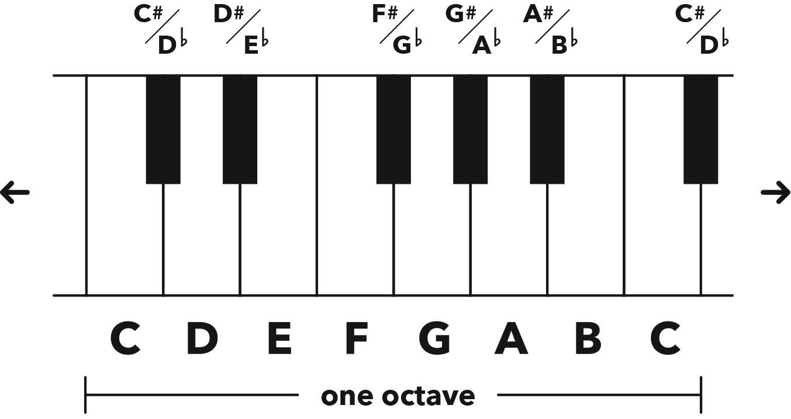

Notes & Enharmonics 音符与等音
Hack
This is your alphabet, literally and musically.
这是你的字母表，字面意义和音乐意义上的。
The first seven letters of our English alphabet are used for the white notes on a piano, aka naturals, and for the five black notes we just add sharps (♯) or flats (♭) to those first seven letters.
我们英文字母表的前七个字母（A 到 G）用于钢琴上的白键，即自然音，而五个黑键则通过在前七个字母上添加升号（♯）或降号（♭）来表示。
All music is made from just these twelve notes – it’s that simple!
所有的音乐都由这十二个音符组成，就这么简单！
Sharp (♯) 1 step up (e.g. C♯ is 1 step up from C)
升号（♯）表示升高一个半音（例如，C♯ 是从 C 升高一个半音）
Flat (♭) 1 step down (e.g. D♭ is 1 step down from D)
降号（♭）表示降低一个半音（例如，D♭ 是从 D 降低一个半音）
Enharmonic is a different name for the same note (e.g. C♯ and D♭ are enharmonics).
等音是同一个音的不同名称（例如，C♯ 和 D♭ 是等音）
When you count through all twelve steps (i.e. notes) and end up on the same letter again, that’s known as an octave: same note, but a higher or lower pitched version.
当你依次数完十二个半音（即音符）后又回到了同一个字母，这被称为八度：同一个音符，但音高更高或更低。

Figure 2.1 Notes on a piano keyboard
图 2.1 钢琴键盘上的音符
Chapter
Notes 音符
You already know that in music we have fewer ‘colours’ than in art, and now I have more good news for you.
你已经知道，在音乐中我们比艺术中拥有的“色彩”要少，现在我有更多的好消息告诉你。
We also have fewer ‘letters’ than in the English alphabet.
我们使用的音符也比英文字母表中的字母少。
We only use the first seven letters of that alphabet (A through G) for our musical notes.
我们只使用英文字母表中的前七个字母（A 到 G）作为我们的音乐音符。
These seven letters are the white notes on a piano.
这七个字母是钢琴上的白键。
If you look at a piano keyboard, you’ll see seven white notes that repeat themselves in the same shape, along with five black notes within that shape.
如果你看钢琴键盘，你会看到七个白键以相同的形状重复出现，中间夹杂着五个黑键。
The first white note in this group is C, and if we move up/right or down/left through this twelve-step cycle (seven white notes and five black notes), we arrive at another C – this time a higher or lower pitched one, respectively.
这组中的第一个白键是 C，如果我们沿着这个十二个半音的循环（七个白键和五个黑键）向上/向右或向下/向左移动，我们会到达另一个 C——这次是更高或更低音的 C。
When we play the same note twelve steps above or below, it’s called an octave.
当我们演奏同一个音符，十二个半音以上或以下时，称为八度。
The word ‘octave’ comes from the Greek word oktō, meaning eight, as there are eight letters (notes) in an octave, including the repeated starting note: C D E F G A B C.
“八度”这个词来源于希腊语“oktō”，意思是八，因为一个八度包括八个音符（包括重复的起始音符）：C D E F G A B C。
This is why the octave is sometimes referred to as the 8th.
这就是为什么八度有时被称为第 8 度。
If you’re interested in science, you’ll be fascinated to know that the sound wave of a note an octave higher will vibrate at twice the frequency, and if we play it down an octave the wave will vibrate at half the frequency.
如果你对科学感兴趣，你会发现一个八度音高的音波频率会是原来的两倍，如果我们把它降低一个八度，音波的频率会是原来的一半。
The faster the vibration the higher the pitch, and the slower the vibration the lower the pitch.
音波振动得越快，音调就越高；振动得越慢，音调就越低。
The piano is a great instrument when it comes to visualising theory, as the notes are different colours, which makes everything so easy it’s like an honest form of cheating.
钢琴是可视化理论的好工具，因为琴键有不同的颜色，这使得一切都变得如此简单，就像一种诚实的作弊方式。
There are a few rare exceptions that we’ll get to later, but generally speaking the white notes on a piano are known as naturals, and the black notes are known as sharps or flats.
除了稍后会提到的少数例外情况，通常白键被称为自然音，而黑键被称为升音或降音。
A sharp (♯) note is 1 step up from its original, and a flat (♭) note is 1 step down from its original.
升音（♯）是比原音高一个半音，而降音（♭）是比原音低一个半音。
Enharmonics 等音
Want to impress some friends with your new theory knowledge?
想用你的新理论知识给朋友们留下深刻印象吗？
Next time you’re out enjoying a fine tea and some good conversation, tell them you’d like to discuss enharmonics.
下次当你在享受一杯好茶和一段美好的交谈时，你可以告诉他们你想讨论一下等音。
Or perhaps if you’re being asked to wash the dishes after dinner, shout “Enharmonic!” and run.
或者如果你在晚饭后被要求洗碗，你可以大喊“等音！”然后跑开。
That’ll confuse ’em and should buy you some time.
这样会让他们感到困惑，并且应该能给你争取一些时间。
Although this fancy word will both impress and irritate those bewildered non-theory-knowing people around you, it’s actually such a ridiculously basic concept to understand that you must never reveal its true meaning to the outsiders.
虽然这个洋气的词会让你周围那些不懂理论的人既感到印象深刻又感到困惑，但实际上这是一个极其基础的概念，你绝不能对外人透露它的真正含义。
Now, an enharmonic is a different name for the same note.
现在，等音就是同一个音的不同名称。
You wanted something grander, I know. Sorry to disappoint, but, like everything in music, it’s simple and easy.
我知道你想要一个更宏伟的词，但对不起，就像音乐中的所有东西一样，它其实很简单和容易。
Let me give you an example of an enharmonic.
让我给你举个等音的例子。
You’ve already learnt that if we move one step up from C we land on C♯, and if we move one step down from D we land on D♭, which makes C♯ and D♭ enharmonic equivalents: same note, different name.
你已经学过，从 C 向上移动一个半音会到 C♯，从 D 向下移动一个半音会到 D♭，所以 C♯ 和 D♭ 是等音：同一个音，不同的名称。
Depending on its surroundings, this note will either be a C♯ or a D♭, but it can only ever have one name within each context.
根据其周围的环境，这个音要么是 C♯，要么是 D♭，但在每个具体的语境中，它只能有一个名称
So, yes, sometimes calling a C♯ a D♭ is actually incorrect, even though you’re describing the same note.
所以，是的，有时候把 C♯ 称为 D♭ 其实是不正确的，尽管你在描述同一个音。
More on this intriguing topic in chapter 7.
更多关于这个有趣的话题请参见第 7 章。